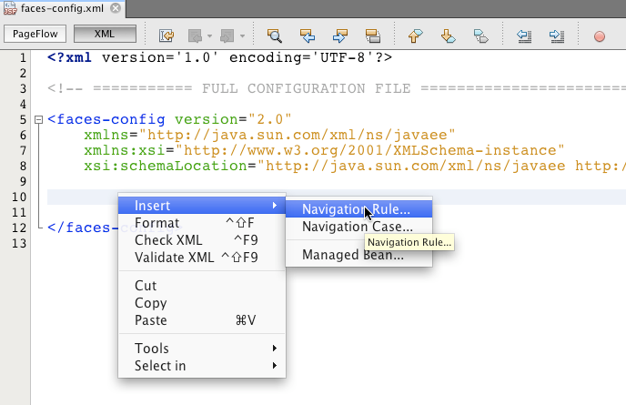
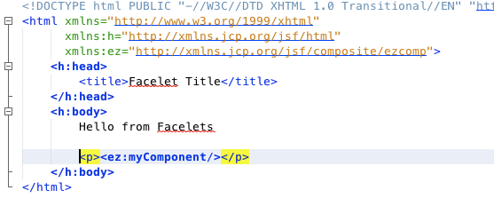
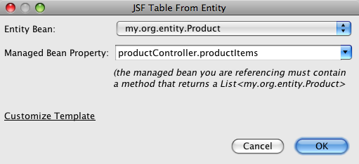

Apache NetBeans
Apache NetBeansJust released!
Suport de JSF 2.0 en l’IDE NetBeans
| This tutorial needs a review. You can open a JIRA issue, or edit it in GitHub following these contribution guidelines. |

Figure 1. El contingut d’aquesta pàgina s’aplica al IDE NetBeans 7.2
Al coincidir amb el llançament de Java EE 6, l’IDE NetBeans 6.8 proporciona moltes característiques que permeten el suport incrustat per a JavaServer Faces 2.0. El nou IDE JSF 2.0 es basa en el seu anterior suport per JavaServer Faces, i inclou millores a l’editor versàtils per a pàgines Facelets, diverses facilitats per treballar amb classes d’entitat, i un conjunt d’assistents JSF per ales tasques comuns de desenvolupament, com la creació de beans JSF gestionats, plantilles Facelets i elements composats.
Els següents temes demostren les característiques JSF 2.0 que estan a la vostra disposició quant treballeu en l’IDE NetBeans 6.8. Per provar les noves característiques JSF, descarregueu el paquet Java de l'IDE NetBeans, el qual inclou tecnologies Java Web i EE.
Continguts
Suport JSF 2.0 per a projectes
El suport JSF per a projectes es pot categoritzar com s’exposa.
-
Els fitxers de plantilla Facelets estan inclosos en el projecte
-
Les biblioteques JSF 2.0 estan afegides al classpath del projecte
-
Faces servlet i servlet mapping estan afegits al descriptor de desplegament del projecte
Utilitzant the GlassFish server, o qualsevol altre servidor compatible amb Java EE 6, you podeu crear projectes amb suport JSF 2.0, o bé afegir suport JSF 2.0 a un projecte existent.
Creant un projecte nou amb suport JSF 2.0
Utilitzeu l’assistent de projecte de l’IDE per a crear una nova aplicació web Java. Per a fer-ho, Cliqueu al botó Nou projecte ( image::images/new-project-btn.png[] ) de la barra d’eines principal de l’IDE, o premeu Ctrl-Maj-N (⌘-Mai-N a Mac). Quant arribeu al Pas 4: Frameworks, seleccioneu JavaServer Faces.

Figure 2. Afegir el suport del Framework JSF quant creeu un projecte
Després de seleccionar JavaServer Faces, es posen a la vostra disposició diverses opcions de configuració, com es mostra en la següent imatge. Podeu determinar com els vostre projecte accedeix a les biblioteques JSF 2.0. Cliqueu a la pestanya de configuració per especificar com Faces servlet serà registrat al descriptor de desplegament del projecte.

Figure 3. Especifica les preferències de Faces servlet sota la pestanya de configuració
Afegint suport JSF 2.0 per a un projecte existent
Si voleu afegir suport JSF 2.0 a una aplicació web Java existent, podeu fer-fo des de la finestra de propietats del projecte.
-
En la finestra de projectes (Ctrl-1; ⌘-1 a Mac), cliqueu amb el botó dret al node del vostre projecte i seleccioneu Propietats. Es mostra la finestra de propietats del projecte.
-
Seleccioneu la categoria Frameworks, després cliqueu al botó Afegir. En el diàleg que es mostra, seleccioneu JavaServer Faces. Després de seleccionar JavaServer Faces, es posen a la vostra disposició diverses opcions de configuració, com especificar la ruta a les biblioteques JSF 2.0, i el registrament de Faces servlet al descriptor de desplegament del projecte.
Utilitzant l’editor
L’editor de l’IDE és especific al llenguatge, i proporciona suport depenent amb el tipus de fitxer amb el qual esteu treballant. Parlant de forma general, podeu prémer Ctrl-Espai en un element del vostre fitxer per invocar l’aito-completat de codi i la documentació de l’API. Podeu prendre també les avantatges de les dreceres de teclat i de les plantilles de codi.
Seleccioneu Ajuda > Targeta de dreceres de teclat, des del menú principal de l’IDE, per visualitzar les dreceres de teclat i plantilles de codi. Pel llistat complet, vegeu l’Especificació de les dreceres de teclat de l'IDE NetBeans 6.x.
El IDE proporciona suport integrat per a Javadoc de l’API JSF 2.0, com per exemple la Documentació de la biblioteca d'etiquetes de JSF. Per agafa l’avantatge d’aquests recursos en el vostre treball, simplement premeu Ctrl-Espai en un element determinat de l’editor.
Si preferiu accedir de forma contínua a la documentació Javadoc, podeu obrir la finestra Javadoc de l’IDE (Finestra > Altres > Javadoc). La finestra Javadoc es refresca automàticament depenent de la localització en la que es trobi el cursor en l’editor.
Quant treballeu en un projecte JSF, els vostres esforços d’edició principalment es centraran als fitxers Facelets, beans gestionats per JSF, i el fitxer de configuració de Faces (faces-config.xml). To seguit mostrarem breument els siport d’edició que està a la vostra disposició.
Editor de Facelets
L’editor de Facelets de l’IDE proporciona nombroses característiques que faciliten el desenvolupament de JSF, incloent el ressaltament de la sintaxis i la comprovació d’errors per a etiquetes JSF, suport de documentació, i auto-completat d’expressions EL, biblioteques i espais de noms del nucli Facelets.
Podeu prémer Ctrl-Espai per invocar l’auto-completat de codi i suport de documentació, allí on sigui aplicable.

Figure 4. Premeu Ctrl-Espai per invocar l’auto-completat de codi i el suport de documentació
Quant el vostre cursor no està posicionat en una etiqueta, premeu Ctrl-Espai per invocar un llistat de tots els elements. Igualment podeu accedir a aquests elements des de la Paleta de l’IDE (Ctrl-Maj-8; ⌘-Maj-8 a Mac).
També podeu escriure un prefix abans de prémer Ctrl-Espai, pex., jsf, per a filtrar elements.

Figure 5. Premeu Ctrl-Espai en l’editor per invocar el llistat d’elements
Podeu prémer Ctrl-Espai per a invocar l’auto-completat de codi pels espais de noms dels Facelets.

Figure 6. Premeu Ctrl-Espai per completar els espais de noms dels Facelets
De forma similar, si escriviu una etiqueta JSF de la qual els espais de noms no han estat declarats en la pàgina, automàticament l’IDE els afegeix a les pàgines d’etiquetes <html>.
L’editor proporciona suport d’auto-completat per a la sintaxis del llenguatge d’expressions (EL, de l’anglès Expression Language). Premeu Ctrl-Espai al codi EL per a invocar suggeriments per a objectes implícits, beans gestionats per JSF, i les seves propietats.

Figure 7. Premeu Ctrl-Espai en les expressions EL per a invocar el suport d’auto-completat per a objectes implícits, beans gestionats per JSF, i propietats bean
També podeu ressaltar talls de codi en l’editor, i seleccionar Convertir a un component composat, en ordre de crear components compostos JSF. Per a més detalls vegeu l'Assistent de configuració de composició.
L’editor proporciona les capacitats comprovació d’errors bàsics. Un error es mostra amb un subratllat vermell i el seu corresponent distintiu al marge esquerra. Les advertències estan subratllades amb groc i denotades amb un distintiu groc al marge esquerra. Podeu desplaçar el ratolí pel text distintiu o subratllat per visualitzar la descripció de l’error.
Quant introduïu les etiquetes JSF, es realitzen diverses comprovacions: Aquest inclou tant:
-
l’existència la biblioteca declarada
-
si la biblioteca correspon amb el prefix de l’etiqueta que conté tal component o etiqueta
-
si l’etiqueta conté tots els atributs necessaris
-
si tots els atributs introduïts estan definits en la interfície del components
L’editor també comprova:
-
l’existència de components sense declarar
-
la presència de declaracions taglib sense usos
Editor de configuració Faces XML
Si incloeu un fitxer faces-config.xml al vostre projecte JSF, podeu prémer Ctrl-Espai quant definiu les regles de navegació o quant declareu beans gestionats en ordre d’apropar el suport d’auto-completat i documentació.
Si preferiu introduir regles de navegació i beans gestionats mitjançant diàlegs en lloc de fer-ho codificant, l’IDE proporciona diversos diàlegs JSF específics per aquest propòsit. Aquests són accessibles des del menú de l’editor amb el botó dret.

Figure 8. Els diàlegs JSF específics proporcionats en el menú de faces-config.xml amb el botó dret
El IDE proporciona dos visualitzacions diferents pel fitxer faces-config.xml: la visualització XML, la qual mostra el codi font XM, i la visualització PageFlow, la qual és una interfície gràfica que representa les regles de navegació JSF definides en el fitxer faces-config.xml.
Per exenmple si el vostre fitxer conté la següent regla de navegació:
<navigation-rule>
<from-view-id>/greeting.xhtml</from-view-id>
<navigation-case>
<from-outcome>resposta</from-outcome>
<to-view-id>/success.xhtml</to-view-id>
</navigation-case>
</navigation-rule>La visualització PageFlow mostra les següents relacions, indicant que una navegació greeting.xhtml a success.xhtml es produeix quant “resposta” es passada al NavigationHandler del JSF.

Figure 9. la visualització PageFlow mostra les relacions de navegació
Clicar dues vegades a la visualització PageFlow us permet navegar directament al fitxer font. Per exemple, quant cliqueu dues vegades al component greeting.xhtml, el fitxer greeting.xhtml s’obre en l’editor. De la mateixa manera, si cliqueu dues vegades a la fletxa entre els dos components, l’editor focalitzarà la regla de navegació definida en la visualització XML de faces-config.xml.
Assistents JSF
L’IDE NetBeans proporciona nombrosos assistents que faciliten el desenvolupament amb JSF 2.0. Podeu crear noves pàgines Facelets, plantilles Facelets, beans gestionats amb JSF, components compostos, fitxers de configuració Faces, i més.
Tots els assistents són accessibles mitjançant l’assistent de fitxer genèric de l’IDE. Per accedir a l’assistent de fitxer, pitgeu el botó de Nou fitxer ( image::images/new-file-btn.png[] ), o seleccioneu Fitxer > Nou fitxer, des del menú principal (o premeu Ctrl-N; ⌘-N a Mac). Els assistent específics de JSF són llistats dins de la categoria JavaServer Faces.

Figure 10. Els assistents orientats a JSF són accessibles des de l’assistent de fitxer
Els següents assistents estan a la vostra disposició quant treballeu amb projectes Java web amb suport JSF.
Assistent de pàgina JSF
Utilitzeu l’assistent de pàgines JSF per a crear pàgines Facelets i JSP pages pel vostre projecte. En l’assistent de fitxer de l’IDE, seleccioneu la categoria JavaServer Face, després seleccioneu Pàgina JSF. En JSF 2.0, Facelets és la forma idònia de declarar pàgines JSF. L’opció Facelets en l’assistent està seleccionada per defecte. Seleccioneu l’opció de fitxer JSP si voleu crear noves pàgines JSP, o fragments de fitxers JSP (.jspf).

Figure 11. Creeu pàgines Facelets utilitzant l’assistent de fitxer JSF de l’IDE
Assistent Bean gestionat
Podeu crear beans gestionats JSF per a la vostra aplicació utilitzant l’assistent de Bean gestionat. Des de la categoria JavaServer Faces en l'assistent de fitxer de l’IDE, seleccioneu Bean gestionat JSF.
Per defecte, qualsevol metadada que especifiqueu en l’assistent és traduïda a anotacions al bean gestionat un cop és generat. Per exemple, el la següent imatge, podeu crear una nova classe d’àmbit de sessió anomenada NewJSFManagedBean i anomenar-la myManagedBean.
image::images/managed-bean.png[title="Creeu beans gestionats mitjançant l’assistent bean gestionat de l’IDE"]Quant el bean gestionat és generat, apareix amb les anotacions apropiades com es mostra.
package my.org;
import javax.faces.bean.ManagedBean;
import javax.faces.bean.SessionScoped;
*@ManagedBean(name="myManagedBean")*
*@SessionScoped*
public class NewJSFManagedBean {
/** Crea una nova instància de NewJSFManagedBean */
public NewJSFManagedBean() {
}
}També, si el vostre projecte ja conté un fitxer faces-config.xml, l’opció de l’assistent 'Afegeix dades al fitxer de configuració' es torna activa, permetent-vos tant declarar el bean gestionat el el fitxer de configuració de Faces, o tenir especificada qualsevol metadada per mitjà d’anotacions en el bean gestionat.
Assistent de configuració de Faces
JSF 2.0 introdueix anotacions com a alternativa del fitxer de configuració estàndard de Faces (faces-config.xml) per configurar la vostra aplicació. Tanmateix, quant afegiu suport JSF 2.0 al projecte, l’IDE NOt genera un fitxer predeterminat faces-config.xml (com era el cas de JSF 1.2). Naturalment, potser voleu afegir un fitxer faces-config.xml al vostre projecte en ordre de definir preferències de configuració concretes. Per a fer-ho, utilitzeu l’assistent de configuració de Faces de l’IDE.
Des de la categoria JavaServer Faces de l'Assistent de fitxer de l’IDE, seleccioneu Configuració JSF Faces. Aquest us permet crear un nou fitxer faces-config.xml, el qual es fica a la carpeta del vostre projecte WEB-INF per defecte.
Vegeu l'Editor de configuració XML de Faces per a una descripció del suport de l’IDE per a faces-config.xml.
Assistent de configuració de composició
JSF 2.0 ha simplificat el procés de creació de components compostos d’interfícies d’usuari (UI), els quals poden ser re-utilitzats en pàgines web. Podeu utilitzar l’assistent de components compostos per generar una plantilla Facelets per a un component composat JSF.
Com tots els assistent relacionats amb JSF, podeu accedir a l’assistent de components composats des de la categoria JavaServer de l'Assistent e fitxer de l’IDE. Tanmateix, una manera més intuïtiva per a indicar l’assistent és mitjançant el ressaltament de talls de codi des dela pàgina de Facelets en l’editor, després seleccionat Convertir a un component compost des del menú del botó dret.
El següent exemple mostra les accions que es produeixen, ficades a la vostra disposició, quant invoqueu l’assistent de component compost en el tall, ‘<p>Aquest és l’element compost.</p>’.

Figure 12. Ressalteu un tros, i seleccioneu Convertir a element compost des del menú del botó dret
S’obre l’assistent d’element compost, contenint el tall seleccionat en la seca secció d’Implementació.

Figure 13. l’assistent d’element compost conte el tal de codi seleccionat
Per defecte, l’assistent crea una carpeta ezcomp per contenir els elements compostos. Per exemple, si esteu creant un nou component anomenat myComponent, l’assistent genera una pàgina Facelets myComponent.xhtml, que resideix en la carpeta resources/ezcomp de la vostra arrel d’aplicació web.
Quant completeu l’assistent, el fitxer font de l’element compost és generat amb el tall de codi donat. La plantilla inclou una referència a la biblioteca d’etiquetes composite de JSF 2.0.
<?xml version='1.0' encoding='UTF-8' ?>
<!DOCTYPE html PUBLIC "-//W3C//DTD XHTML 1.0 Transitional//EN" "http://www.w3.org/TR/xhtml1/DTD/xhtml1-transitional.dtd">
<html xmlns="http://www.w3.org/1999/xhtml"
xmlns:h="http://java.sun.com/jsf/html"
xmlns:f="http://java.sun.com/jsf/core"
xmlns:ui="http://java.sun.com/jsf/facelets"
*xmlns:composite="http://java.sun.com/jsf/composite"*>
<!-- INTERFÍCIE -->
<composite:interface>
</composite:interface>
<!-- IMPLEMENTACIÓ -->
<composite:implementation>
*<p>Aquest és l'element compost.</p>*
</composite:implementation>
</html>també, una nova etiqueta de component és afegida a la localització de l’editor quant ressalteu un tall. En aquest cas, l’etiqueta generada és: <ez:myComponent/>. Denoteu que l’IDE afegeix automàticament l’espai de noms on resideix l’element compost a l’etiqueta de la pàgina <html>.

Figure 14. L’etiqueta del component és automàticament afegida a la vostra pàgina web
Pàgines JSF des de l’assistent de classes d’entitat
Vegeu el tema Creant pàgines JSF des de classes d’entitat sota Suport per a classes d’entitat.
Assistent de plantilla Facelets
Utilitzeu l’assistent de plantilla Facelets per generar una plantilla Facelets. Des de la categoria JavaServer Facesde l'Assistent de fitxer de l’IDE, seleccioneu la plantilla Facelets. Podeu seleccionat 8 estils de disseny únics, i especificar si el disseny està implementat amb etiquetes CSS o HTML <table>.

Figure 15. Creeu una plantilla Facelets mitjançant l’assistent de plantilles Facelets
L’assistent crea un fitxer de plantilla XHTML mitjançant les etiquetes <h:head> i <h:body>, i situa les seves fulles d’estil en la carpeta resources/css de l’arrel de l’aplicació web. L’assistent genera un fitxer default.css, i un fitxer cssLayout.css o tableLayout.css, depenent de disseny que heu seleccionat.
Per a visualitzar la plantilla al navegador, cliqueu amb el botó dret a l’editor i seleccionau Visualitzar. S’obre una finestra del navegador mostrant la plantilla.
Suport per classes d’entitat
Si esteu utilitzant Persistència de Java en la vostra aplicació i teniu classes d’entitat basades amb l’esquema de la vostra base de dades, l’IDE proporciona un funcionalitat que us permet treballa de forma eficient amb les dades de la classe d’entitat.
*Nota: *Per crear classes d’entitat des d’una taula de la base de dades, utilitzeu les classes d’entitat de l’IDE des de l’assistent de bases de dades, accessible des de la categoria Persistència en l'Assistent de fitxer de l’IDE.
Creant pàgines JSF des de classes d’entitat
Un cop tingueu les classes d’entitat en la vostra aplicació, podeu utilitzar les pàgines JSF de IDE des de l’assistent de classes d’entitat, per a crear interfícies web per a mostrar i editar les dades de la classe d’entitat. El codi generat per l’assistent està basat amb les anotacions de Persistència contingudes en la classe d’entitat.
Per a cada classe d’entitat, l’assistent genera el següent:
-
Un bean de sessió sense-estat per a la creació, recuperació, modificació i eliminació d’instàncies d’entitat
-
un àmbit de sessió JSF, bean gestionat
-
un directori que conté quatre fitxers Facelets files per a capacitats CRUD c(
Create.xhtml,Edit.xhtml,List.xhtml, iView.xhtml) -
classes d’utilitat utilitzades pels beans gestionats JSF (
JsfUtil,PaginationHelper) -
un paquet de propietats per als missatges localitzats, i una entrada corresponent en el fitxer de configuració Faces (Un fitxer
faces-config.xmlés creat si no n’hi existia cap.) -
fitxers web auxiliars, incloent una fulla d’estil pels components renderitzats, i un fitxer de plantilla Facelets
Per utilitzar pàgines JSF des de l’assistent de classes d’entitat, accediu a l’assistent de fitxer de l’IDE. Seleccioneu la categoria JavaServer Faces, després seleccioneu Pàgines JSF des de classes d’entitat.
Quant hageu arribat a l’envergadura del Pas 3: Generar pàgines i classes JSF, podeu especificar les localitzacions dels fitxers que seran generats.

Figure 16. Especifiqueu les localitzacions dels fitxers que seran generats
Per exemple, si esteu aplicant l’assistent al fitxer de la classe d’entitat Customer, les preferències de la següent imatge generaran els següents fitxers:
image::images/projects-win-generated-files.png[title="La finestra de projectes mostra novament els fitxers generats"] |
* Un fitxer [source,xml] ---- <application>
<resource-bundle>
<base-name>/my/org/Bundle</base-name>
<var>bundle</var>
</resource-bundle>
</application>
----
* Una carpeta |
Creant un formulari JSF per a dades d’entitat
Podeu utilitzar el diàleg de formulari des d’entitat per generar un formulari JSF que contingui tots els camps continguts en una classe d’entitat. Heureu de tindre ja creat un bean gestionat JSF per a tractar qualsevol dada d’usuari associada amb el formulari.
*Nota: *Si utilitzeu aquest formulari sense tindre associat un bean gestionat, podeu introduir un nom pel bean gestionat en el diàleg, i aquest nom serà utilitzat en de la pàgina independent de si és vàlid o no. Després podeu crear un bean gestionat mitjançant l'assistent de bean gestionat de l’IDE, o bé si utilitzeu l'assistent de pàgines JSF des de classes d’entitat, els beans gestionats són generats per a totes les classes d’entitat seleccionades.
Podeu accedir al diàleg formulari des d’entitat o bé prement Ctrl-Espai en l’editor de la pàgina Facelets després seleccionant Formulari JSF des d’entitat, o bé mitjançant doble clic a l’element del formulari d’entitat des del llistat de la Paleta de l’IDE (Ctrl-Maj-8; ⌘-Maj-8 a Mac).
Per exemple, en la següent imatge, una classe d’entitat Customer eja existeix en el paquet my.org del projecte donat. Un bean gestionat customerController temé ja existeix en el projecte donat, i el bean gestionat cinté una propietat anomenada selected la qual retorna un objecte Customer.

Figure 17. Utilitzeu el diàleg de formulari des d’entitat per a generar un formulari JSF utilitzant dades d’entitat
*Nota: *Seleccioneu l’opció 'Generar una vista de només lectura' per a crear un formulari que contingui camps de només lectura. Quan aquesta opció està seleccionada, l’IDE aplica les etiquetes <h:outputText> per als camps del formulari, mentre que les etiquetes <h:inputText> són aplicades on l’opció no està seleccionada.
Quan completeu el diàleg, l’IDE genera el codi per a la vostra pàgina Facelets. Per exemple, una classe d’entitat Customer que contingui una propietat customerId es mostra amb el següent format:
<f:view>
<h:form>
<h1><h:outputText value="Create/Edit"/></h1>
<h:panelGrid columns="2">
<h:outputLabel value="CustomerId:" for="customerId" />
<h:inputText id="customerId" value="#{customerController.selected.customerId}" title="CustomerId" required="true" requiredMessage="The CustomerId field is required."/>
...
_[ Altres camps per ser afegits aquí ]_
...
</h:panelGrid>
</h:form>
</f:view>Per a modificar la plantilla que ha generat el codi, cliqueu a l’enllaç Personalitzar la plantilla, dins del diàleg de formulari des d’entitat.
Creat una taula de dades JSF per a dades d’entitat
Podeu utilitzar el diàleg de taula de dades des d’entitat per a generar una taula de dades JSF que contingui columnes per a totes les propietats contingudes en la classe d’entitat. En ordre d’utilitzar aquesta facilitat, heu de tenir ja creat un a bean gestions JSF per manipular les dades de rerefons assocades amb la classe d’entitat.
*Nota: *Si utilitzeu aquest diàleg sense tindre creat un bean gestionat associat, podeu introduir un nom pel bean gestionat en el diàleg, i aquest nom serà utilitzat en de la pàgina independent de si és vàlid o no. Després podeu crear un bean gestionat mitjançant l'assistent de bean gestionat de l’IDE, o bé si utilitzeu l'assistent de pàgines JSF des de classes d’entitat, els beans gestionats són generats per a totes les classes d’entitat seleccionades.
Podeu accedir al Diàleg taula de dades des d’entitat tant prement Ctrl-Espai en una pàgina Facelets de l’editor després seleccionant Taula de dades JSF des d’entitat, o mitjançant doble clic a l’element Taula de dades des d’una entitat, llistat en la Paleta de l’IDE (Ctrl-Maj-8; ⌘-Maj-8 a Mac).
Per exemple, en la següent imatge, una classe d’entitat Product ja existeix en el paquet my.org.entity del projecte donat. Un bean gestionat productController també existeix en el projecte, i el bean gestionat conté un mètode anomenat getProductItems() el qual retorna un Llistat d’objectes Product.

Figure 18. Utilitzeu el diàleg de taula de dades des d’entitat per a generar una taula de dades JSF des de les dades d’una entitat
Quan completeu el diàleg, l’IDE genera codi per a la vostra pàgina Facelets. Per exemple, una classe d’entitat Product que contingui una propietat productId és mostrada amb el següent format:
<f:view>
<h:form>
<h1><h:outputText value="List"/></h1>
<h:dataTable value="#{productController.productItems}" var="item">
<h:column>
<f:facet name="header">
<h:outputText value="ProductId"/>
</f:facet>
<h:outputText value="#{item.productId}"/>
</h:column>
...
_[ Altres columnes afegides aquí. ]_
...
</h:dataTable>
</h:form>
</f:view>Per modificar la plantilla utilitzada per generar el codi, cliqueu a l’enllaç Personalitzar la plantilla dins del diàleg formulari des de taula de dades.
Components de la paleta JSF
Quant treballeu amb pàgines Facelets, podeu prendre les avantatges de la Paleta de l’IDE per arrossegar i soltar etiquetes JSF dins de la pàgina. Podeu accedir a la Paleta tant seleccionant Finestra > Paleta, des del menú principal, o prémer Ctrl-Maj-8 (⌘-Maj-8 a Mac).

Figure 19. Utilitzeu la paleta de l’IDE per arrossegar i soltar els components JSF comuns damunt de la pàgina Facelets
També podeu seleccionar Codi > Inserir codi (Alt-Ins; Ctrl-I a Mac) des del menú principal de l’IDE per invocar el llistat emergent que conté els components JSF específics continguts en la paleta.

Figure 20. En l’editor, premeu Alt-Ins (Ctrl-I a Mac) per a invocar el llistat de components JSF específics
La Paleta us proporciona cinc components JSF relacionats:
-
*Metadades: * Invoca un diàleg per afegir la parella nom-valor dins de les etiquetes de meetadades JSF. Per exemple, si especifiqueu ‘myId’ i ‘myValue’ com a parella nom-valor, es produeix el següent tros de codi:
<f:metadata>
<f:viewParam id='myId' value='myValue'/>
</f:metadata>-
*Formulari JSF: * Afegeix el següent tros de codi a la pàgina.
<f:view>
<h:form>
</h:form>
</f:view>-
*Formulari JSF des d’entitat: *Invoca un diàleg que us permet associar dades des d’una classe d’entitat als camps continguts en un formulari JSF. Vegeu Creant un formulari JSF per a dades d’entitat.
-
*Taula de dades JSF: *Afegeix el següent tros de codi a la pàgina.
<f:view>
<h:form>
<h:dataTable value="#{}" var="item">
</h:dataTable>
</h:form>
</f:view>-
*Taula de dades JSF des d’entitat: *Invoca un diàleg que us permet associar dades des d’una classe d’entitat als camps continguts en una taula de dades JSF. Vegeu Creant una taula de dades JSF per a dades d’entitat. link:/about/contact_form.html?to=3&subject=Feedback: JSF 2.0 Support in NetBeans IDE 6.8[Envia'ns la vostra opinió]